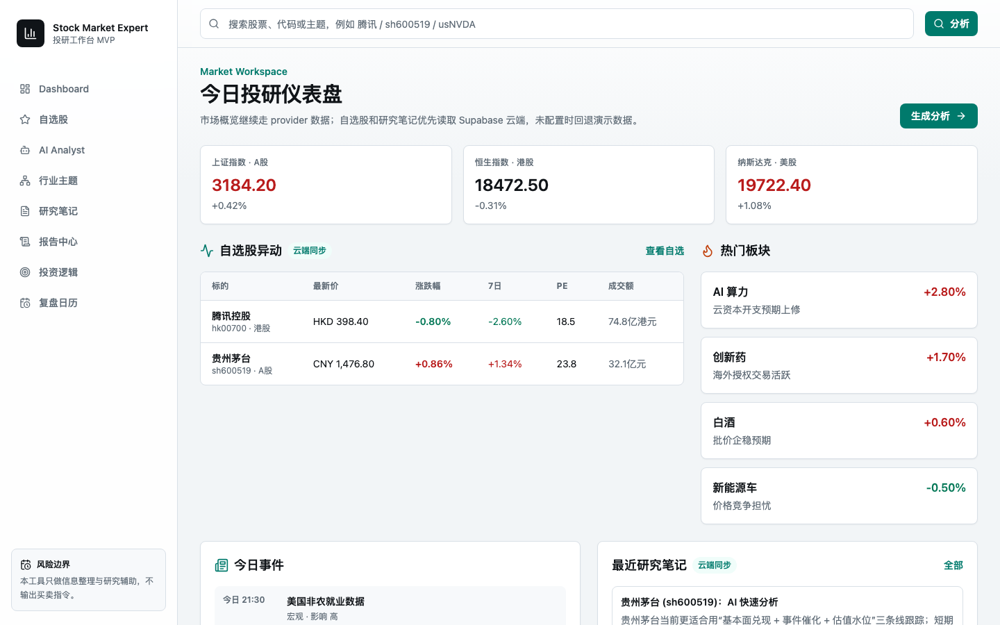
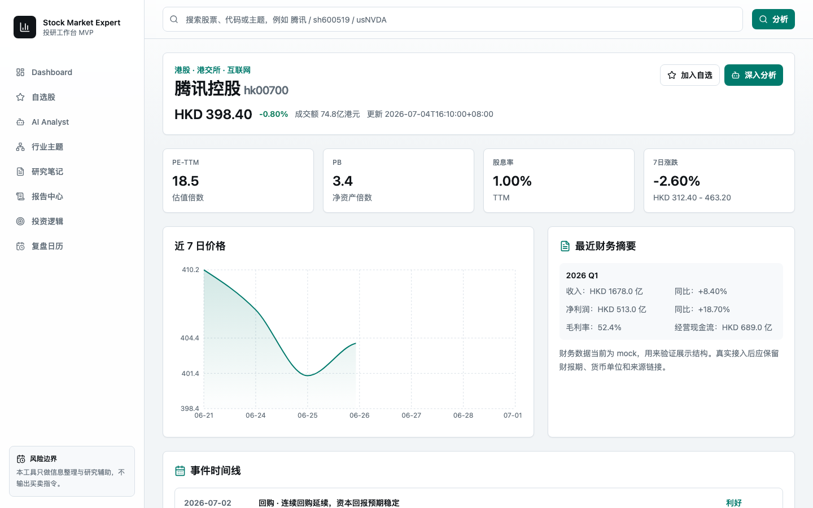
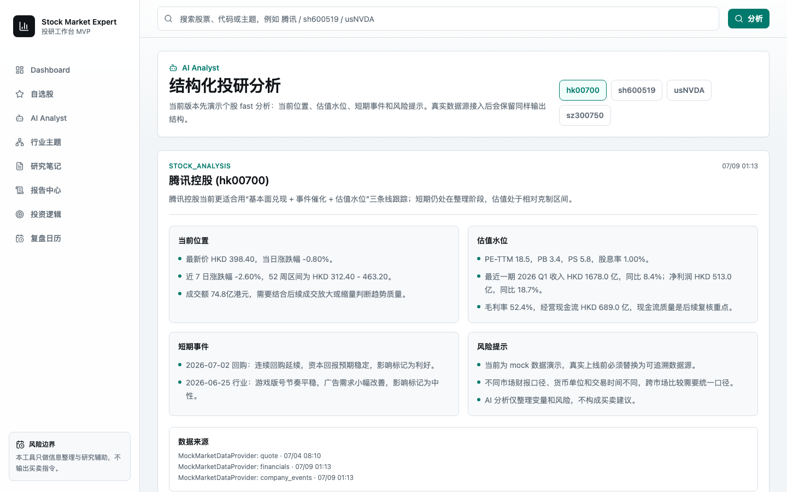
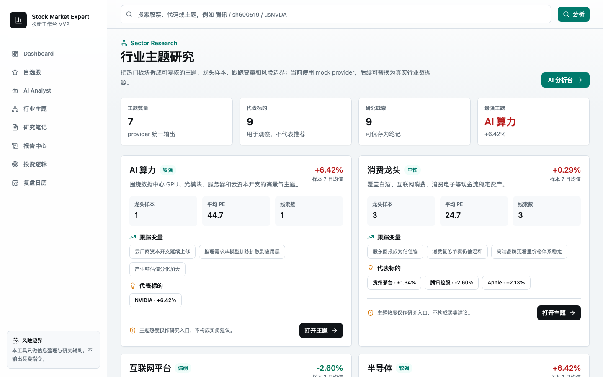

如何用 Next.js 14 从零构建一个功能完善、架构清晰的全栈 Web 应用？
市面上的股票工具要么只有行情展示，要么直接给买卖建议。我们想做的是一个真正帮助投资者完成投研闭环的工作台——整理数据、沉淀逻辑、追踪事件。
前端统一通过 MarketDataProvider 获取数据，页面层零依赖具体数据源。支持 mock / Supabase 云端 / 外部 API 三种模式无缝切换。
左边是每日投研起点——Dashboard 汇总三大市场指数、热门板块与自选异动；右边是个股深度研究页——从行情 K 线到 AI 分析，一站式呈现。


这是整个项目最核心的架构决策。所有页面组件不直接依赖任何具体数据源，而是通过统一的 TypeScript 接口获取数据。
AI 分析模块不是简单的 Q&A 聊天，而是按照"当前位置→估值水位→短期事件→风险提示"的标准模板，生成可追溯、可保存的结构化报告。

